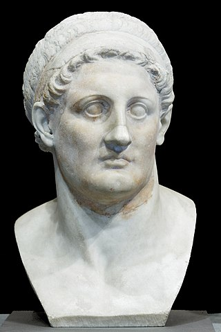
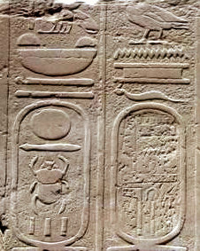

Egypt | Artifacts
A Detailed History of the Rosetta Stone
Published: Jan 22 2021
A deep dive into the history of the Rosetta stone. Exploring its ancient, modern and academic history.
Introduction
The Rosetta stone was made in 196 BCE and is probably Ancient Egypt’s best known artifact. Both the history of its discovery and its academic value make it such an iconic piece.
In the gallery of 10 iconic artifacts, we briefly touched on the Rosetta stone. But, in this article we dive deeper into its history and academic function.
~~~
Discovery

The Rosetta stone in the British Museum.
The stone was found close to the historic city of Rosetta during Napoleon Bonaparte’s campaign into Egypt (1798-1801). An officer of the French army is accredited to have found and seized the stone in 1799. But, this context begs the question: how did the Rosetta stone end up in the British Museum?
After having been found, the Rosetta stone accompanied the army of general Jacques-François Menou along with many other spoils of war. But, this general was defeated in a major battle against the Ottoman-English alliance and ultimately had to surrender after a brief English blockade of his hideout city in 1801. As part of this capitulation, the British empire acquired the Rosetta stone from the French. A mere year after this reception king George III donated the Rosetta stone to the British Museum – and it has remained there ever since.
The Rosetta Stone's ancient history
A bust of Ptolemy I Soter (the saviour) who instigated Ptolemaic Egypt in 305 BCE
The Rosetta stone’s distant past is no less intriguing than its more modern history. It ranges from the time that Macedon ruled over Egypt, and the Ptolemaic kingdom had come to be. Ptolemy was one of the kings that received a part of Alexander’s empire, after he had come to die (in 323 BCE).
With his reign over Egypt, Ptolemy I and his descendants occupied themselves with establishing the legitimacy of their kingship. The official decree of the Rosetta stone is an example of this effort: it denotes the affirmation of the royal cult of Ptolemy the Fifth. In other words: the highest council of priests had agreed upon the coronation of the young Ptolemy.
The mixture between religion and kingship and the according cultural convergence is a recurring theme in Ptolemaic Egypt. While dynasties may change, a people cannot convert its beliefs and traditions out of the blue. The decree on the Rosetta stone is an attempt to harmonize two diverging cultures. That is, the tablet shows that Egypt’s cultural elite approved of the kings from Macedon.
Deciphering the Rosetta Stone

An example of a cartouche that designates the royal name ‘Amenhotep II’. He was a pharaoh who reigned form 1427-1401 BCE.
Part of the reason why the Rosetta stone has become so popular, is that it was the key to deciphering the Egyptian hieroglyphic script. Prior to its discovery, scholars of 19th-century Europe had no idea about the meaning of hieroglyphic texts. But, the stone marked a breakthrough in this area. It presents the same decree in 3 different scripts: Ancient Greek, Demotic and hieroglyphic. With the existing knowledge of Ancient Greece’s language, scholars could gradually decipher the meaning of the hieroglyphs found on the Rosetta stone.
The French scholar Jean-François Champollion is known for the first notable decryption of the stone’s hieroglyphs (in 1822). A key asset that helped Champollion decipher the script is the presence of ‘cartouches’ that are part of the official decree. These are circles around groups of hieroglyphic characters that denounce the use of a royal or divine name.